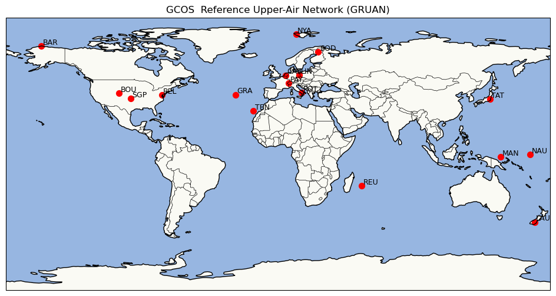
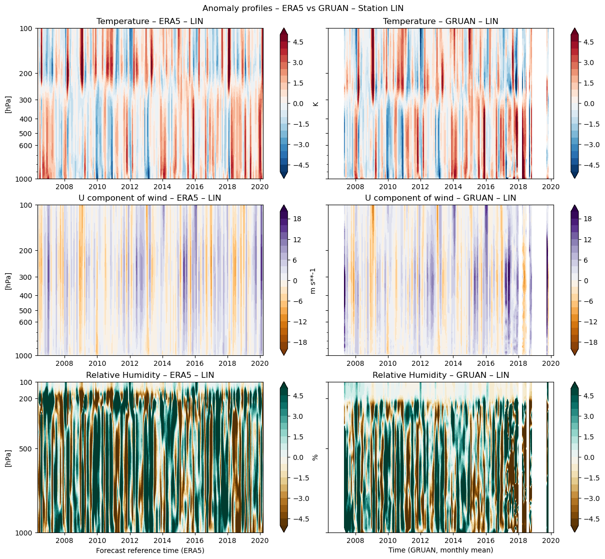
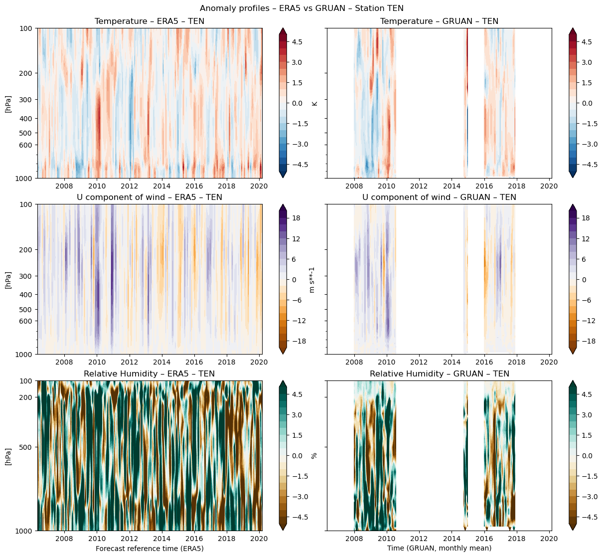
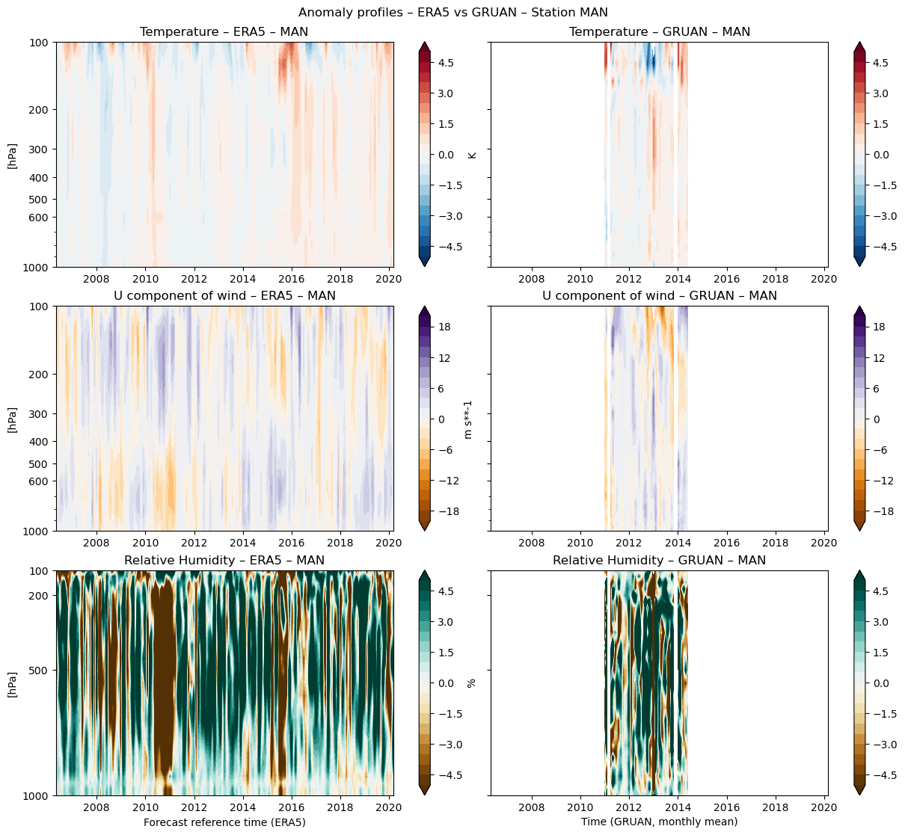
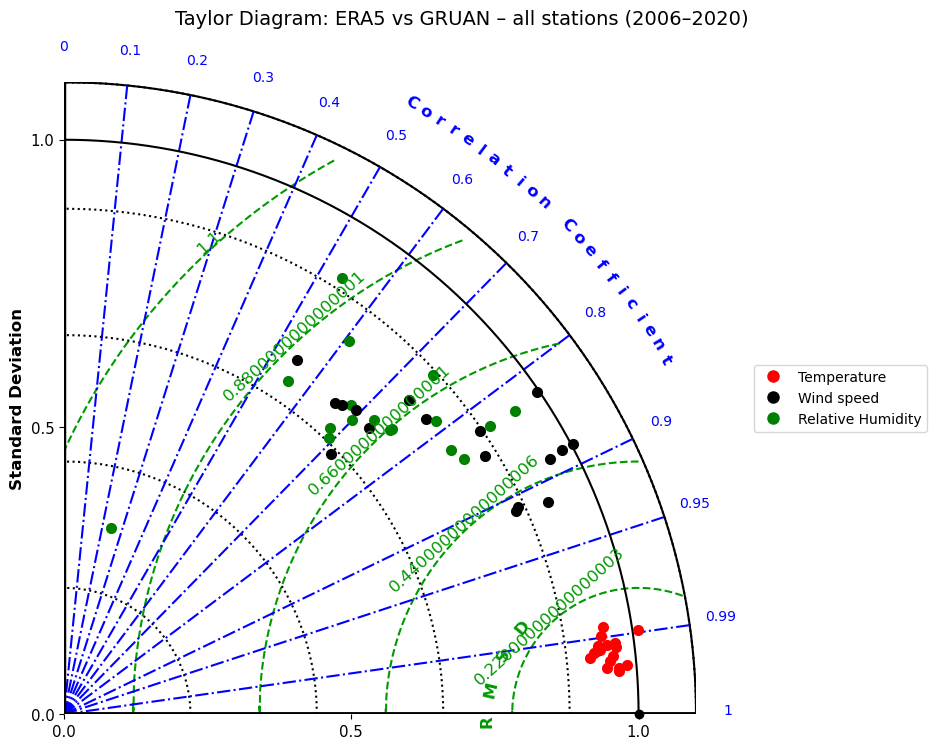

2.1. GCOS Reference Upper-Air Network (GRUAN) data to evaluate ECMWF ERA5 reanalysis products#
Production date: 15-11-2025
Produced by: Agenzia nazionale per le nuove tecnologie, l’energia e lo sviluppo economico sostenibile (ENEA)
🌍 Use case: Evaluating ERA5 Performance Against GRUAN radiosonde data for Climate and Forecasting Applications#
❓ Quality assessment question#
How do ERA5 reanalysis products perform against GCOS Reference Upper-Air Network data?
High quality in situ reference observations are essential for evaluating atmospheric reanalyses such as ERA5, providing an observational high level reference with documented uncertainties. Within this context, the GCOS Reference Upper-Air Network [1], plays a central role: its rigorously corrected radiosonde profiles, offer traceable, vertically resolved uncertainty estimates suitable for benchmarking reanalysis performance [2; 3]. Over the past ten years, several studies have demonstrated the importance of reference quality radiosonde observations, often from GRUAN, for evaluating reanalysis products. Recent literature has documented the ability of ERA5 to reproduce climatological structures such as tropopause height, while revealing seasonal and regional discrepancies, mainly due to the limited station coverage [4]; others, confirm that temperature fields in modern reanalyses (including ERA5) show low bias and high correlation when evaluated against GRUAN or other high quality reference radiosonde data [5]. By contrast, authors highlight that humidity and water vapor from reanalysis in the upper troposphere and stratosphere remain more uncertain [e.g. 6].
📢 Quality assessment statement#
These are the key outcomes of this assessment
Temperature is the variable for which ERA5 consistently performs best across all stations. The reanalysis accurately reproduces the amplitude of variability (standard deviation ratio close to 1), the vertical anomaly structure and the temporal evolution. This is confirmed by very high correlations (R ≳ 0.95) and low centered RMSD, indicating a strong match across all pressure levels.
For the U-component of the wind, ERA5 shows a moderate to good correlation with GRUAN, but underestimates variability (standard deviation ratio ≈ 0.8–0.5) and exhibits structural differences in vertical anomaly patterns (centred RMSE ≈ 0.8–0.4).
Relative humidity is the variable with the lowest skill, showing generally lower correlations and a larger mismatch in vertical structure.
📋 Methodology#
This notebook presents a workflow for comparing ERA5 monthly pressure‑level reanalysis fields with in situ temperature, relative humidity and wind profiles from 2006 to March 2020 from the GRUAN reference network over the period May 2006 – March 2020 to illustrate how reference quality radiosonde measurements can be employed for a general comparison aimed at assessing whether ERA5 and GRUAN exhibit similar vertical atmospheric structures and temporal variability. GRUAN’s high vertical resolution and uncertainty characterization make it particularly effective at identifying altitude dependent and region specific reanalysis biases, while its limited spatial coverage highlights the complementarity between localized reference observations and globally complete reanalyses. The GRUAN dataset provides high‑quality vertical profiles at selected stations (17 in the CDS), while ERA5 offers global coverage at a fixed pressure grid. The methodology ensures that both datasets are align to a common spatial, temporal and vertical reference frame, making them suitable for quantitative comparison.
The analysis and results are organised in the following steps, detailed in the sections below:
1. Data acquisition and preprocessing
Import libraries, define parameters, requests and function to cache
Download GRUAN radiosonde profiles, reorganize metadata and variables and interpolates profile at standard pressure levels
Download ERA5 monthly reanalysis fields (temperature, humidity, u‑wind, v‑wind) at standard pressure levels and select the nearest point to a given station
Convert station longitudes to 0–360° to match ERA5’s longitude convention and identifies the first neighborhood
2. Anomalies Analysis and Statistical Evaluation with Taylor Diagrams
Anomalies for both datasets are computed and compared using a side‑by‑side visualization
Statistical metrics (correlation coefficient, RMSD, and standard deviation) between the two datasets are calculated and visualized through a Taylor diagram, which summarizes the performance of the ERA5 reanalysis against the radiosonde reference network
Limitation related to the collocation of ERA5 and GRUAN profiles as well as the representativeness error of the reanalysis are also discussed in the following
📈 Analysis and results#
1. Data acquisition and preprocessing#
Import libraries#
Define parameters#
Define requests#
Recovering from HTTP error [429 Too Many Requests], attempt 1 of 500
Retrying in 10 seconds
Recovering from HTTP error [429 Too Many Requests], attempt 1 of 500
Retrying in 10 seconds
Define functions to cache#
_reorganize_dataset(ds) function restructures each GRUAN variable performing the following steps:
extracts the physical variable name encoded in the field observed_variable;
renames the measurement field (originally observation_value) to that variable name;
renames uncertainty variables so they follow a consistent naming pattern;
moves metadata such as units and data type from separate variables into attribute fields;
assigns human‑readable long_name attributes to all variables.
reorganize_dataset(ds) function applies the above cleaning procedure to the entire GRUAN file performing the following steps:
decodes byte‑encoded strings into proper UTF‑8 text;
splits the dataset by observed_variable (each block corresponds to one measured variable);
calls _reorganize_dataset() on each block;
merges the cleaned sub‑datasets back into a single, coherent dataset, where each variable has consistent names, units and metadata.
compute_interpolated_insitu_profiles function reconstructs GRUAN in‑situ profiles on a set of standard pressure levels by applying a vertical interpolation for each atmospheric variable (temperature, humidity, and wind components). The procedure works as follows:
the native GRUAN pressure (air_pressure or pressure) is used whenever available; if missing, pressure is derived from altitude using a standard barometric formula. All pressure values are in hPa and the profile is sorted in ascending pressure, which is required for stable interpolation.
for each variable, the function performs a vertical interpolation: by default linear interpolation in pressure; optionally, linear interpolation in log‑pressure (use_logp=True), which better represents variables that vary exponentially with height (e.g., temperature and humidity).
each variable is interpolated independently, using only its valid measurement levels. This prevents a single missing variable from invalidating the entire profile.
interpolation is performed only if: at least 3 valid pressure levels are available; the pressure coordinate is monotonic after sorting; duplicate pressure levels are removed; the variable has enough finite values to allow a meaningful interpolation.
select_nearest_station function selects the nearest ERA5 grid point to a given station
_ensure_str_list(arr) converts an input list into a list of strings: If an element is stored as raw bytes it is decoded to UTF‑8; otherwise it is simply cast to str.
haversine(lat1, lon1, lat2, lon2) computes the great‑circle distance between two geographical points using the Haversine formula: It returns the distance in kilometers, accounting for Earth’s curvature. The longitudes are first converts into the (-180°, 180°) range with to_lon180(lon) function
plot_anomalies(…) generates side‑by‑side Hovmöller diagrams (time–pressure contour plots) comparing ERA5 anomalies and GRUAN anomalies for a selected station, performing the following steps:
extracts ERA5 and GRUAN anomaly profiles for the chosen station;
subsets the data to the selected time window;
optionally resamples GRUAN time series to monthly means to match ERA5’s temporal resolution;
ensures consistent pressure and level coordinates for both datasets;
plots, for each variable, ERA5 anomalies (left panel) and GRUAN anomalies (right panel) using comparable color scales and axes.
GCOS Reference Upper-Air Network (GRUAN) profiles#

The panel above shows the distribution of GRUAN sites relative to the subset available in the CDS.
Retrival and interpolation of GRUAN radiosonde profiles#
100%|██████████| 167/167 [00:17<00:00, 9.64it/s]
Retrival of monthly mean ERA5 pressure level data#
station='NYA'
100%|██████████| 167/167 [00:13<00:00, 12.69it/s]
station='BAR'
100%|██████████| 167/167 [00:10<00:00, 15.61it/s]
station='SOD'
100%|██████████| 167/167 [00:12<00:00, 12.93it/s]
station='LIN'
100%|██████████| 167/167 [00:09<00:00, 17.29it/s]
station='TEN'
100%|██████████| 167/167 [00:09<00:00, 18.02it/s]
station='BEL'
100%|██████████| 167/167 [00:11<00:00, 14.23it/s]
station='BOU'
100%|██████████| 167/167 [00:12<00:00, 13.50it/s]
station='CAB'
100%|██████████| 167/167 [00:12<00:00, 13.31it/s]
station='GRA'
100%|██████████| 167/167 [00:13<00:00, 12.31it/s]
station='LAU'
100%|██████████| 167/167 [00:15<00:00, 10.47it/s]
station='MAN'
100%|██████████| 167/167 [00:13<00:00, 12.84it/s]
station='NAU'
100%|██████████| 167/167 [00:13<00:00, 12.30it/s]
station='PAY'
100%|██████████| 167/167 [00:09<00:00, 17.91it/s]
station='POT'
100%|██████████| 167/167 [00:09<00:00, 16.86it/s]
station='REU'
100%|██████████| 167/167 [00:10<00:00, 15.76it/s]
station='SGP'
100%|██████████| 167/167 [00:10<00:00, 16.29it/s]
station='TAT'
100%|██████████| 167/167 [00:13<00:00, 12.05it/s]
/data/wp5/.tmp/ipykernel_3409833/884858239.py:11: FutureWarning: In a future version of xarray the default value for coords will change from coords='different' to coords='minimal'. This is likely to lead to different results when multiple datasets have matching variables with overlapping values. To opt in to new defaults and get rid of these warnings now use `set_options(use_new_combine_kwarg_defaults=True) or set coords explicitly.
ds_era5 = xr.concat(datasets, "station").compute()
Identify nearest neighbours#
| station | Latitude | Longitude | Distance [km] | |
|---|---|---|---|---|
| 0 | BAR | 71.32 | 203.390 | 8.717081 |
| 1 | BEL | 39.05 | 283.120 | 11.762939 |
| 2 | BOU | 39.95 | 254.800 | 7.004516 |
| 3 | CAB | 51.97 | 4.920 | 6.414198 |
| 4 | GRA | 39.09 | 331.970 | 10.337462 |
| 5 | LAU | -45.05 | 169.680 | 7.821566 |
| 6 | LIN | 52.21 | 14.120 | 9.304649 |
| 7 | MAN | -2.06 | 147.420 | 11.115027 |
| 8 | NAU | -0.52 | 166.920 | 9.169027 |
| 9 | NYA | 78.92 | 11.930 | 9.019602 |
| 10 | PAY | 46.81 | 6.950 | 7.681616 |
| 11 | POT | 40.60 | 15.720 | 11.404729 |
| 12 | REU | -21.08 | 55.383 | 15.052258 |
| 13 | SGP | 36.60 | 262.510 | 11.155315 |
| 14 | SOD | 67.37 | 26.630 | 14.301714 |
| 15 | TAT | 36.06 | 140.130 | 12.686823 |
| 16 | TEN | 28.32 | 343.620 | 14.094414 |
2. Anomalies Analysis and Statistical Evaluation with Taylor Diagrams#
Computation of anomalies#
Plot anomalies#



The entire dataset available in the CDS is considered by comparing monthly mean ERA5 pressure level fields with monthly mean GRUAN profiles over their overlapping period (2006–2020). The comparison is carried out for temperature, relative humidity, and the eastward wind component (U). For each GRUAN site, the nearest ERA5 grid point is selected, allowing a direct point to point evaluation of the vertical structure along the pressure levels. Anomalies are computed by removing the annual cycle, obtained as the climatological mean of each month over the full period. A visual comparison of anomalies is then performed through paired Hovmöller diagrams (time–pressure contour plots). For illustrative purposes, the visualization is restricted to three representative stations:
• Lindenberg (LIN), the site with the longest and most continuous GRUAN record,
• Tenerife (TEN), an example of a station with temporal discontinuities, and
• Manus (MAN), included because it shows the lowest correlations for at least one of the variables based on the statistical evaluation (Taylor diagram and summary table).
Overall, the vertical structure and temporal patterns of temperature and wind anomalies are generally well captured by ERA5, with coherent features visible across the entire atmospheric column. In contrast, relative humidity exhibits noticeably poorer agreement, with ERA5 showing reduced skill in reproducing both the magnitude and variability of the observed RH anomalies, especially in the upper and middle troposphere.
Statistical Metrics and Taylor Diagram#
The Taylor diagram provides a concise statistical summary of how well two fields agree in terms of their correlation, centered root‑mean‑square difference (cRMSD), and the ratio of their standard deviations [7]. For each station and each variable (temperature, U‑wind component, and relative humidity), monthly‑mean GRUAN profiles (reference observations) are compared with monthly‑mean ERA5 profiles. The statistical metrics —correlation coefficient, standard‑deviation ratio (ERA5/GRUAN), and centered RMSD— are computed using the full set of monthly profiles: for a given station and variable, all pressure levels and all months within 2006–2020 are concatenated into a single Hovmöller diagrams before computing the statistics. Consequently, the Taylor diagram represents reanalysis skill aggregated across the entire vertical column and across all profiles. The standard‑deviation ratio assesses whether ERA5 captures the amplitude of variability of the GRUAN profiles (values near 1 indicate similar variability; values < 1 indicate an underestimation; values > 1 indicate an overestimation). The centered RMSD quantifies differences in pattern/shape between ERA5 and GRUAN after removing their means, thus being independent of bias. The correlation coefficient measures the linear association between ERA5 and GRUAN anomaly profiles across all pressure levels and time steps (R ≈ 1 indicates very strong agreement; 0.7–0.9 good agreement; < 0.5 moderate to poor; < 0.2 negligible).
In the Taylor diagram, the radial distance corresponds to the reanalysis standard deviation (plotted as a ratio to the observed), the angle to the correlation coefficient, and the green dashed curves to the centered RMSD. Each point therefore summarizes ERA5 performance for a specific station–variable pair. The diagrams are generated with the SkillMetrics Python package, which implements these statistics and the Taylor diagram plotting functions [8].

The quantitative analysis based on the statistical metrics, in the diagram above, clearly highlights that temperature exhibits the best agreement between ERA5 and GRUAN. The two datasets show a very high correlation, and ERA5 accurately reproduces both the amplitude of the variability and the vertical anomaly patterns along the profile. For the U wind component, the correlations between datasets decrease, although a generally good agreement is still evident. ERA5 tends to underestimate the variability, as indicated by standard deviation ratios typically in the range 0.8–0.5, and the profiles show noticeable structural differences, with centered RMSD values of about 0.8-0.4 (see also the summary table below). The behaviour is similar for relative humidity, with some stations showing even poorer skill, reflecting both reduced correlation and a larger mismatch in the vertical structure compared to temperature and wind. The results are consistent with those reported in the literature (see Introduction). However, several sources of uncertainty that are not explicitly addressed in the present analysis should be acknowledged. Firstly, the drift of radiosonde balloons during ascent should be considered: radiosonde measurements do not represent true point observations, since each profile samples a off-vertical atmospheric column rather than a fixed vertical location. Ideally, a more physically consistent comparison would involve extracting ERA5 values at the grid point closest to the radiosonde’s position at each measurement level, rather than assuming a single fixed station location. However, implementing such a trajectory-based collocation is computationally demanding and is therefore not included in this analysis. Additionally, the representativeness error of the reanalysis must be considered. ERA5 provides grid-box averages, whereas GRUAN offers point-scale measurements; this mismatch introduces a representativeness error that can appear in the statistics (particularly at lower altitudes or in regions influenced by pronounced orographic effects). Therefore, the present notebook aims to provide a general comparison focused on assessing whether ERA5 and GRUAN exhibit similar vertical atmospheric structures and temporal variability. It acknowledges that a more rigorous collocation strategy could further refine the results.
| station | Latitude | Longitude | Distance [km] | t (RMS) | u (RMS) | r (RMS) | t (corr) | u (corr) | r (corr) | |
|---|---|---|---|---|---|---|---|---|---|---|
| 0 | BAR | 71.32 | 203.39 | 8.7 | 0.147 | 0.413 | 0.570 | 0.99 | 0.91 | 0.83 |
| 1 | BEL | 39.05 | 283.12 | 11.8 | 0.133 | 0.588 | 0.736 | 0.99 | 0.83 | 0.68 |
| 2 | BOU | 39.95 | 254.80 | 7.0 | 0.131 | 0.677 | 0.822 | 0.99 | 0.74 | 0.61 |
| 3 | CAB | 51.97 | 4.92 | 6.4 | 0.088 | 0.402 | 0.565 | 1.00 | 0.92 | 0.83 |
| 4 | GRA | 39.09 | 331.97 | 10.3 | 0.083 | 0.471 | 0.658 | 1.00 | 0.89 | 0.75 |
| 5 | LAU | -45.05 | 169.68 | 7.8 | 0.132 | 0.633 | 0.690 | 0.99 | 0.78 | 0.74 |
| 6 | LIN | 52.21 | 14.12 | 9.3 | 0.088 | 0.523 | 0.539 | 1.00 | 0.85 | 0.84 |
| 7 | MAN | -2.06 | 147.42 | 11.1 | 0.132 | 0.757 | 0.974 | 0.99 | 0.66 | 0.24 |
| 8 | NAU | -0.52 | 166.92 | 9.2 | 0.131 | 0.701 | 0.841 | 0.99 | 0.72 | 0.56 |
| 9 | NYA | 78.92 | 11.93 | 9.0 | 0.150 | 0.685 | 0.564 | 0.99 | 0.73 | 0.83 |
| 10 | PAY | 46.81 | 6.95 | 7.7 | 0.138 | 0.746 | 0.689 | 0.99 | 0.67 | 0.73 |
| 11 | POT | 40.60 | 15.72 | 11.4 | 0.112 | 0.856 | 0.715 | 0.99 | 0.55 | 0.70 |
| 12 | REU | -21.08 | 55.38 | 15.1 | 0.130 | 0.418 | 0.918 | 0.99 | 0.91 | 0.54 |
| 13 | SGP | 36.60 | 262.51 | 11.2 | 0.105 | 0.480 | 0.734 | 1.00 | 0.88 | 0.68 |
| 14 | SOD | 67.37 | 26.63 | 14.3 | 0.163 | 0.723 | 0.620 | 0.99 | 0.69 | 0.79 |
| 15 | TAT | 36.06 | 140.13 | 12.7 | 0.123 | 0.483 | 0.723 | 0.99 | 0.88 | 0.69 |
| 16 | TEN | 28.32 | 343.62 | 14.1 | 0.098 | 0.565 | 0.656 | 1.00 | 0.83 | 0.76 |
The table above provides for each station, its coordinates, the distance from the nearest ERA5 grid point, and the corresponding statistical metrics (correlation, RMSD and standard deviation ratio) for the three variables.
ℹ️ If you want to know more#
Key resources#
CDS catalogue entries used in this notebook are:
ERA5 monthly averaged data on pressure levels from 1940 to present
Product Documentation for GRUAN and
Product Documentation for ERA5 are available
external pages:
GRUAN website, GCOS Reference Upper-Air Network
Code libraries used:
C3S EQC custom functions,
c3s_eqc_automatic_quality_control, prepared by B-OpenXarray for working with multidimensional arrays in Python
Matplotlib for visualization in Python
Scipy for statistics in Python
skill_metrics for calculating the skill of model predictions against observations
References#
[1] GCOS Reference Upper-Air Network website: https://www.gruan.org/network/about-gruan
[2] Dirksen, R. J., Sommer, M., Immler, F. J., Hurst, D. F., Kivi, R., and Vömel, H.: Reference quality upper-air measurements: GRUAN data processing for the Vaisala RS92 radiosonde, Atmos. Meas. Tech., 7, 4463–4490, https://doi.org/10.5194/amt-7-4463-2014, 2014.
[3] Dirksen, R. J., Bodeker, G. E., Thorne, P. W., Merlone, A., Reale, T., Wang, J., Hurst, D. F., Demoz, B. B., Gardiner, T. D., Ingleby, B., Sommer, M., von Rohden, C., and Leblanc, T.: Managing the transition from Vaisala RS92 to RS41 radiosondes within the Global Climate Observing System Reference Upper-Air Network (GRUAN): a progress report, Geosci. Instrum. Method. Data Syst., 9, 337–355, https://doi.org/10.5194/gi-9-337-2020, 2020.
[4] Gou, Y., Zhang, J., Wang, W., Huang, K., and Zhang, S.: Intercomparison of tropopause height climatologies: high-resolution radiosonde measurements versus ERA5 reanalysis, Atmos. Chem. Phys., 25, 17319–17330, https://doi.org/10.5194/acp-25-17319-2025, 2025.
[5] Essa YH, Cagnazzo C, Madonna F, Cristofanelli P, Yang C, Serva F, Caporaso L and Santoleri R (2022) Intercomparison of Atmospheric Upper-Air Temperature From Recent Global Reanalysis Datasets. Front. Earth Sci. 10:935139. doi: 10.3389/feart.2022.935139
[6] Noh, Y.-C.; Sohn, B.-J.; Kim, Y.; Joo, S.; Bell, W. Evaluation of Temperature and Humidity Profiles of Unified Model and ECMWF Analyses Using GRUAN Radiosonde Observations. Atmosphere 2016, 7, 94. https://doi.org/10.3390/atmos7070094
[7] Taylor, K. E. (2001), Summarizing multiple aspects of model performance in a single diagram, J. Geophys. Res., 106(D7), 7183–7192, doi:10.1029/2000JD900719.
[8] Peter A. Rochford (2016) Skill Metrics Project